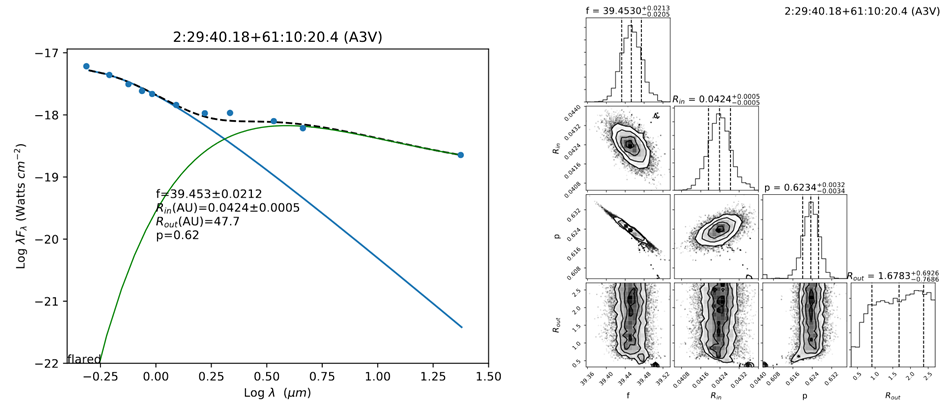

# This program reads in isochrone and PMS evolutionary track data from the Mesa
# Isochrones and Stellar Tracks (MIST)of Choi et al. (2016) and overlays
# luminosity and temperature data of a sample of YSOs (including uncertainties)
# to create a Hertzsprung-Russell Diagram (H-R diagram). All MIST resources,
# including the read_mist_models routine, can be downloaded at:
# http://waps.cfa.harvard.edu/MIST/index.html
import read_mist_models
import numpy as np
import matplotlib.pyplot as plt
import pandas
iso = read_mist_models.ISO('/MIST_iso_5ec68f6b31e2b.iso')
# List of evolutionary tracks and isochrones to be plotted
mtracks = ['TRK_0.5M.txt', 'TRK_0.7M.txt', 'TRK_1.0M.txt', 'TRK_1.5M.txt',
'TRK_2.0M.txt', 'TRK_3.0M.txt', 'TRK_4.0M.txt', 'TRK_5.0M.txt',
'TRK_7.0M.txt', 'TRK_10.0M.txt', 'TRK_15.0M.txt', 'TRK_24.0M.txt']
Mlist = ['0.5', '0.7', '1.0', '1.5', '2.0', '3.0', '4.0', '5.0', '7.0', '10.0',
'15.0', '24.0']
lag = np.array([5.0, 6.0, 6.39, 6.7, 7.0, 7.3, 7.8])
Age = np.round(10**(lag)/10**6, 1)
# Read in data for sources to be overlayed on the diagram as a dataframe
fl = pandas.read_csv("/ClusterMembers.txt",
sep='\t')
# Initialize figure
fig = plt.figure(figsize=(9,7))
ax1 = fig.add_subplot(111)
# Plot the evolutionary tracks and isochrones via loops and label each
# on the plot
for i in range(len(mtracks)):
data=pandas.read_csv('/MIST/'+mtracks[i],
sep='\t')
lums=data.values[:,0]
tems=data.values[:,1]
ax1.plot(tems,lums,linewidth=0.8,color='gray')
plt.text(tems[0]-0.001,lums[0],Mlist[i]+r'$M_{\odot}$',fontsize=11)
# Conditional statements below are for small adjustments for the labeling
# of certain isochrones
for i in range(len(lag)):
age_ind = iso.age_index(lag[i])
logTeff = iso.isos[age_ind]['log_Teff']
logL = iso.isos[age_ind]['log_L']
if lag[i]==6.0:
ax1.plot(logTeff[40:250], logL[40:250], '--', color='gray',
linewidth=0.8)
plt.text(logTeff[40], logL[40], str(Age[i])+"Myr", fontsize=11)
else:
ax1.plot(logTeff[40:214], logL[40:214], '--', color='gray',
linewidth=0.8)
plt.text(logTeff[40], logL[40], str(Age[i])+"Myr", fontsize=11)
# Indicate the groups of cluster members to be plotted and the marker types
indices=['i','h']
labels=['IRX',r'H$\alpha$']
marks=['^','*']
lw=1.0
##indices=['x']
##labels=['Xray']
##marks=['x']
##lw=1.5
##indices = ['k']
##labels = ['Proper Motion']
##marks = ['p']
##lw = 0.6
# This loop will plot the sources with the indices specified above
for i in range(len(indices)):
data = fl.loc[fl['index']==indices[i]]
LogL = data['LogL']
eL = data['eL']
LogT = data['LogT']
sTer = np.array([data['eTlow'], data['eTup']])
ax1.scatter(LogT, LogL, marker=marks[i], label=labels[i] ,s=50,
linewidths=lw, zorder=2)
ax1.errorbar(LogT, LogL, yerr=eL, xerr=sTer, fmt='none', elinewidth=0.6,
capsize=2, capthick=0.5, zorder=1, ecolor='k')
# Format axes, labels, and legend
ax1.minorticks_on()
ax1.tick_params(direction="in", length=5)
ax1.tick_params(which='minor', direction="in")
ax1.tick_params(which='both', bottom=True, top=True, left=True, right=True,
labelsize=12)
plt.xlabel(r'$LogT_{eff}(K)$', fontsize=12)
plt.ylabel(r'$Log(L/L_{\odot})$', fontsize=12)
plt.legend(loc=3,frameon=False, fontsize=12)
plt.xlim(4.6, 3.4)
plt.savefig('MIST_HRD_IRXha.png',dpi=600)
plt.show()
plt.close(fig)
Plotly-based H-R Diagram
# This Jupyter notebook creates an interactive Hertzsprung-Russell diagram which displays different
# groups of young stars (based on their youth indicators). The background image of pre-main-sequence
# tracks and isochrones will distort if zoomed (giviving incorrect age/mass estimates).
# Import libraries
import numpy as np
import pandas
import plotly.graph_objects as go
import plotly.io as pio
from plotly.offline import iplot
from PIL import Image
# Read in data for sources to be overlayed on the diagram as a dataframe
fl = pandas.read_csv("/ClusterMembers.txt",sep='\t')
# Separate data to be used in individual traces
irx_name = fl.loc[fl['index']=='i']['Name']
irx_LogL = fl.loc[fl['index']=='i']['LogL']
irx_LogT = fl.loc[fl['index']=='i']['LogT']
ha_name = fl.loc[fl['index']=='h']['Name']
ha_LogL = fl.loc[fl['index']=='h']['LogL']
ha_LogT = fl.loc[fl['index']=='h']['LogT']
x_name = fl.loc[fl['index']=='x']['Name']
x_LogL = fl.loc[fl['index']=='x']['LogL']
x_LogT = fl.loc[fl['index']=='x']['LogT']
p_name = fl.loc[fl['index']=='k']['Name']
p_LogL = fl.loc[fl['index']=='k']['LogL']
p_LogT = fl.loc[fl['index']=='k']['LogT']
# Separate symmetric luminosity errors and asymmetric temperature errors
irx_eL = fl.loc[fl['index']=='i']['eL']
irx_eTup = fl.loc[fl['index']=='i']['eTup']
irx_eTlow = fl.loc[fl['index']=='i']['eTlow']
h_eL = fl.loc[fl['index']=='h']['eL']
h_eTup = fl.loc[fl['index']=='h']['eTup']
h_eTlow = fl.loc[fl['index']=='h']['eTlow']
x_eL = fl.loc[fl['index']=='i']['eL']
x_eTup = fl.loc[fl['index']=='i']['eTup']
x_eTlow = fl.loc[fl['index']=='i']['eTlow']
p_eL = fl.loc[fl['index']=='k']['eL']
p_eTup = fl.loc[fl['index']=='k']['eTup']
p_eTlow = fl.loc[fl['index']=='k']['eTlow']
# Initialize the figure and define traces to be plotted
fig = go.Figure()
trace = go.Scatter(x=irx_LogT, y=irx_LogL, hovertext=irx_name,
error_y=dict(type='data', array=irx_eL, visible=True, thickness=1),
error_x=dict(type='data', symmetric=False, array=irx_eTup, arrayminus=irx_eTlow),
mode='markers', name='IRX')
trace2 = go.Scatter(x=ha_LogT, y=ha_LogL, hovertext=ha_name,
error_y=dict(type='data', array=h_eL, visible=True, thickness=1),
error_x=dict(type='data', symmetric=False, array=h_eTup, arrayminus=h_eTlow),
mode='markers', name='Ha')
trace3 = go.Scatter(x=x_LogT, y=x_LogL, hovertext=x_name,
error_y=dict(type='data', array=x_eL, visible=True, thickness=1),
error_x=dict(type='data', symmetric=False, array=x_eTup, arrayminus=x_eTlow),
mode='markers', name='Xray')
trace4 = go.Scatter(x=p_LogT, y=p_LogL, hovertext=p_name,
error_y=dict(type='data', array=p_eL, visible=True, thickness=1),
error_x=dict(type='data', symmetric=False, array=p_eTup, arrayminus=p_eTlow),
mode='markers', name='Proper Motion', visible=False)
data = [trace, trace2, trace3, trace4]
updatemenus = list([
dict(active=0,
showactive = True,
buttons=list([
dict(label = "All",
method = "update",
args = [{"visible": [True, True, True, False]}]),
dict(label = "IRX",
method = "update",
args = [{"visible": [True, False, False, False]}]),
dict(label = "Halpha",
method = "update",
args = [{"visible": [False, True, False, False]}]),
dict(label = "Xray",
method = "update",
args = [{"visible": [False, False, True, False]}]),
dict(label = "ProperMotion",
method = "update",
args = [{"visible": [False, False, False, True]}])
]))])
# Update plot layout and superimpose background image of tracks and isochrones
# Note: Image via PIL allows background image to be saved as data in HTML file
layout = dict(title="Cluster Member Hertzsprung-Russell Diagram",
showlegend=True,
xaxis=dict(title='Log(Temperature)', range=[4.6,3.4]),
yaxis=dict(title='Log(Luminosity)', range=[-2,5.25]),
updatemenus=updatemenus, hovermode="closest", template="plotly_dark",
images=[dict(
source=Image.open("Background.png"),
xref="paper",
yref="paper",
x=-0.16,
y=1.15,
sizex=1.3,
sizey=1.3,
sizing="stretch",
opacity=0.5,
layer="below")])
fig = dict(data=data, layout=layout)
iplot(fig)
pio.write_html(fig, file="HRD_errors.html")
Distance to IC 1805
# This code imports a sample of stellar distances (in pc) and fits
# a Gaussian distribution to the sample. A figure is
# outputted which shows the sample, best-fit Gaussian, and displays
# the best fit parameters (i.e., mean cluster distance and standard
# deviation).
import matplotlib.pyplot as plt
from scipy.optimize import curve_fit
from scipy import asarray as ar
import numpy as np
import pandas as pd
import math
import matplotlib.backends.backend_pdf
# Open a PDF for the figure
pdf = matplotlib.backends.backend_pdf.PdfPages("DistHist.pdf")
# Import the stellar distances from a csv file
data = pd.read_csv('/dHist.csv')
d = data['Dist'].values
# Bin the stellar distances according to the Freedman & Diaconis rule
# then compute the midpoints of each bin
w = 2*(np.percentile(d, 75)-np.percentile(d, 25))/len(d)**(1/3)
bs = math.ceil((d.max()-d.min())/w)
hs, bins = np.histogram(d, bs)
mids=[]
for i in range(len(bins)-1):
mids.append((bins[i]+bins[i+1])/2)
# Define a Gaussian function and use SciPy to fit the Gaussian to
# the imported data
def gaus(x, a, x0, sig):
return a*np.exp(-(x-x0)**2/(2*sig**2))
mean = np.average(d)
sigma = np.std(d)
popt,pcov = curve_fit(gaus, mids, hs, p0=[1, mean, sigma])
# Create the Gaussian curve to overlay onto the figure
fit=gaus(mids, popt[0], popt[1], popt[2])
# Create and format the figure
fig, ax = plt.subplots()
n2, bins, patches = plt.hist(d,bins)
plt.plot(mids, fit, color='k', linestyle='--', linewidth=1)
ax.minorticks_on()
ax.tick_params(direction="in", length=5)
ax.tick_params(which='minor', direction="in")
ax.tick_params(which='both', bottom=True, top=True, left=True, right=True)
plt.xlabel('Distance (pc)', fontsize=12)
plt.ylabel('No. of Sources', fontsize=12)
plt.xlim(right=4000)
plt.text(2200,40,"Mean Distance (pc)="+str(round(popt[1]))+r'$\pm$'+str(round(popt[2])))
pdf.savefig()
pdf.close()
MCMC Circumstellar Disk Parameters

# This program will estimate four parameters, via Markov chain Monte Carlo sampling,
# of disk-bearing YSOs using a flared blackbody disk model.
# Input photometry should be dereddened and in units of Watts cm^-2 mu^-1.
# All documentation for the "emcee" program by Foreman-Mackey et al. (2013) can be
# found here: https://emcee.readthedocs.io/en/stable/#
import math
import numpy as np
import matplotlib.pyplot as plt
import matplotlib.backends.backend_pdf
import emcee
import corner
from scipy.integrate import quad
# Define constants to be used in disk model
h = 6.626e-34
c = 2.998e8
hc = h * c
bnum = 2 * np.pi * h * c ** 2
k = 1.381e-23
G = 6.674e-11
RsunAU = 0.0046525 # Solar radius in AU
au2 = (1.496e11) ** 2 # Conversion between meters and AU
# Set burn-in and sampling iterations
burn = 500
steps = 800
# Wavelengths for PanSTARRS, 2MASS, AllWISE, and Spitzer passbands
# (in order of increasing wavelength)
lam = [
0.486,
0.617,
0.752,
0.866,
0.962,
1.235,
1.662,
2.159,
3.4,
3.55,
4.5,
4.6,
5.74,
7.92,
23.68,
]
lam2 = np.array(lam) * 10 ** (-6.0)
# Define Planck distribution, prior, and total log probability
def bbmodel(Teff, lamb):
bbmodel = (
(bnum / lamb ** 5)
* (np.exp(hc / (lamb * k * Teff)) - 1) ** (-1.0)
* 10 ** (-10.0)
)
return bbmodel
def prior(theta):
f, hole, p, out = theta
if 37.0 < f < 42.0 and RstarAU < hole < 2.0 and 0.4 < p < 1.5 and 0.3 < out < 2.8:
return 0.0
return -np.inf
def lnprob(theta):
lp = prior(theta)
if not np.isfinite(lp):
return -np.inf
return lp + lnlike(theta)
# Open a text document that will record best fit parameter values
pfile = open("/params.txt", "w")
# Open text file containing all information of sources to be fitted:
# dereddened photometries, extinction, temeprature, and stellar radius.
# This code will individually pass each source to the emcee sampler,
# and collect the numerical results in a text file while also creating
# individual PDFs of figures.
file = open("/IRXsources.txt")
for line in file:
row = line.replace("\n", "").split("\t")
name = row[0]
av = float(row[1])
obs = [
float(row[2]),
float(row[4]),
float(row[6]),
float(row[8]),
float(row[10]),
float(row[12]),
float(row[14]),
float(row[16]),
float(row[18]),
float(row[20]),
float(row[22]),
float(row[24]),
float(row[26]),
float(row[28]),
float(row[30]),
]
err = [
float(row[3]),
float(row[5]),
float(row[7]),
float(row[9]),
float(row[11]),
float(row[13]),
float(row[15]),
float(row[17]),
float(row[19]),
float(row[21]),
float(row[23]),
float(row[25]),
float(row[27]),
float(row[29]),
float(row[31]),
]
sptyp = row[32]
T = float(row[33])
Rstar = float(row[34])
n2 = row[35]
# Estimate protostellar radius in AU and the thin disk grazing angle coefficient
RstarAU = Rstar * RsunAU
A = 0.4 * RstarAU
# Open PDFs that will record fit SEDs and Corner plots for each source
pdf = matplotlib.backends.backend_pdf.PdfPages("/MCMCdisk_sample_" + n2 + ".pdf")
pdf2 = matplotlib.backends.backend_pdf.PdfPages("/MCMCcorner_sample_" + n2 + ".pdf")
# Trim photometry and wavelength lists to weed out zeroes
obs2 = []
err2 = []
lamB = []
for i in range(len(obs)):
if obs[i] != 0 and err[i] != 0:
obs2.append(obs[i])
err2.append(err[i])
lamB.append(lam[i])
lamB2 = (np.array(lamB)) * 10 ** (-6.0)
fluxm = np.array(obs2)
err2 = np.array(err2)
fluxm2 = np.log10(fluxm)
err3 = fluxm2 - np.log10(fluxm - err2)
errax = err3
# These ranges can be adjusted to skip PanSTARRS photometry if necessary
fluxm2 = fluxm2[1:]
err3 = err3[1:]
lb = lamB[1:]
lb2 = lamB2[1:]
obs3 = np.log10(np.array(obs2))
llam = np.log10(np.array(lamB))
# Estimate normalization factor for stellar blackbody curve
scale2 = obs[1] / (lam[1] * np.pi * bbmodel(T, lam2[1]))
# Define the likelihood function.
# This is done within the for-loop because some variables here are
# determined from each individual source.
def lnlike(theta):
f, hole, p, out = theta
totes = []
sflux = []
bb = np.pi * scale2 * bbmodel(T, lb2)
blfl = lb * bb
sflux = blfl
for i in range(len(fluxm2)):
l1 = lb2[i]
integ = lambda r: r * bbmodel(
(0.5 * (A / r + 0.03 * r ** (2 / 7))) ** (1 / 4)
* T
* (RstarAU / (r)) ** (p),
l1,
)
q = quad(integ, hole, 10 ** (out), epsabs=0)
flux = np.pi * lb[i] * au2 * q[0]
totes.append(flux)
totes = np.array(totes) * 10 ** (-f)
total = totes + sflux
total = np.log10(total)
return -0.5 * (
np.sum((fluxm2 - total) ** 2 / err3 ** 2 + np.log(2 * np.pi * err3 ** 2))
)
# Set up the sampler and create distributions of walkers
ndim, nwalkers = 4, 50
pos1 = np.random.normal(40.0, 1.0, nwalkers)
pos2 = np.random.normal(0.2, 0.01, nwalkers)
pos3 = np.random.normal(0.625, 0.1, nwalkers)
pos4 = np.random.normal(1.8, 0.1, nwalkers)
pos = np.stack((pos1, pos2, pos3, pos4), axis=-1)
# Run MCMC
sampler = emcee.EnsembleSampler(nwalkers, ndim, lnprob)
print("Burn-in")
posB, prob, state = sampler.run_mcmc(pos, burn, thin_by=1)
sampler.reset()
print("Sizzling")
print("Running MCMC...RadTrans")
sampler.run_mcmc(posB, steps, thin_by=1)
print("Done.")
# Estimate median and standard deviations for each parameter chain
samples = sampler.get_chain(discard=0, flat=True)
f_e, h_e, p_e, o_e = np.median(samples, axis=0)
f_std, h_std, p_std, o_std = np.std(samples, axis=0)
# Write best fit parameters to text file
pfile.write(
n2
+ "\t"
+ str(round(f_e, 6))
+ "\t"
+ str(round(h_e, 6))
+ "\t"
+ str(round(o_e, 6))
+ "\t"
+ str(round(p_e, 6))
+ "\t"
+ str(round(f_std, 7))
+ "\t"
+ str(round(h_std, 7))
+ "\t"
+ str(round(o_std, 7))
+ "\t"
+ str(round(p_std, 7))
+ "\n"
)
# Reset the sampler before the next source
sampler.reset()
# Make the corner plot and save to PDF. Note: show_titles=TRUE displays
# the 0.16,0.5, and 0.84 quantiles
name2 = name + " " + "(" + sptyp + ")"
fig = corner.corner(
samples,
labels=["f", r"$R_{in}$", "p", r"$R_{out}$"],
quantiles=[0.16, 0.5, 0.84],
show_titles=True,
title_fmt=".4f",
title_kwargs={"fontsize": 16},
label_kwargs={"fontsize": 14},
)
fig.gca().annotate(
name2,
xy=(1.0, 1.0),
xycoords="figure fraction",
xytext=(-20, -10),
textcoords="offset points",
ha="right",
va="top",
fontsize=18,
)
pdf2.savefig()
plt.close(fig)
# Plot SEDs of the results using medians
fig = plt.figure()
ax1 = fig.add_subplot(111)
# Use a finer spread of wavelengths to produce smoother curves in the theoretical SEDs
lmb1 = np.arange(0.5, 24.0, 0.1)
lmb2 = lmb1 * 10 ** (-6)
lmb3 = np.log10(lmb1)
# Convert the outer disk radius and standard deviation to AU
routs = samples[:, 3]
routs = 10 ** (routs)
ro_e = np.median(routs)
ro_std = np.std(routs)
# Reproduce the star, disk, and star+disk SEDs using median parameter values from the sampler
totes = []
sflux = []
star = []
bb = np.pi * scale2 * bbmodel(T, lmb2)
blfl = lmb1 * bb
sflux = blfl
star = np.log10(sflux)
for i in range(len(lmb1)):
l1 = lmb2[i]
integ = lambda r: r * bbmodel(
(0.5 * (A / r + 0.03 * r ** (2 / 7))) ** (1 / 4)
* T
* (RstarAU / (r)) ** (p_e),
l1,
)
q = quad(integ, h_e, 10 ** (o_e), epsabs=0)
flux = np.pi * lmb1[i] * au2 * q[0]
totes.append(flux)
totes = np.array(totes) * 10 ** (-f_e)
total = totes + sflux
total = np.log10(total)
disk = np.log10(totes)
name2 = name + " " + "(" + sptyp + ")"
# Assemble the actual SED plot, save to PDF, and repeat until the end of the file is reached
ax1.scatter(llam, obs3, s=20.0, zorder=3)
ax1.plot(lmb3, star, zorder=2)
ax1.plot(lmb3, total, "--", color="k", zorder=2)
ax1.plot(lmb3, disk, color="g", linewidth=1, zorder=2)
plt.title(name2)
plt.xlim(-0.4, 1.5)
plt.ylim(bottom=-22)
plt.xlabel(r"Log $\lambda$ $(\mu m)$")
plt.ylabel(r"Log $\lambda F_{\lambda}$ (Watts $cm^{-2})$")
plt.text(
0,
-20,
"f="
+ str(round(f_e, 4))
+ r"$\pm$"
+ str(round(f_std, 4))
+ "\n"
+ r"$R_{in}$(AU)="
+ str(round(h_e, 4))
+ r"$\pm$"
+ str(round(h_std, 4))
+ "\n"
+ r"$R_{out}$(AU)="
+ str(round(ro_e, 1))
+ r"$\pm$"
+ str(round(ro_std, 1))
+ "\n"
+ "p="
+ str(round(p_e, 2)),
fontsize="medium",
)
plt.text(0, 0, "flared", transform=ax1.transAxes)
pdf.savefig()
plt.close(fig)
pdf.close()
pdf2.close()
file.close()
pfile.close()